Танець - це рух, а рух - це життя!
Народний танець — фольклорний танець, який побутуює у своєму природному середовищі і має певні традиційні для даної місцевості рухи, ритми, костюми тощо. Фольклорний танець — це стихійний вияв почуттів, настрою, емоцій і виконується в першу чергу для себе, а потім — для глядача (товариства, гурту, громади). 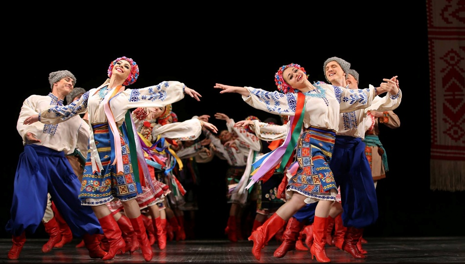
Повільний вальс — бальний танець європейської програми. Танцюється на 3/4. Як правило, на кожен такт відводиться три кроки. Під час руху вперед перший крок найбільшою мірою визначає довжину переміщення в даному такті, другий — кут повороту, третій — допоміжний, зміна вільної ноги, тобто перенесення центру тяжіння тіла. 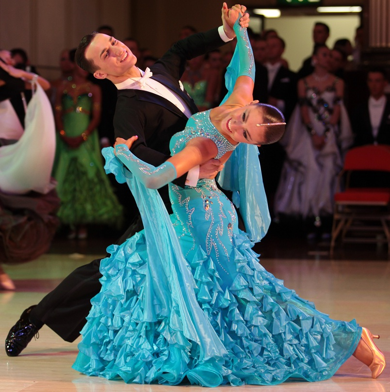
Джаз-фанк — жанр джазової музики. Характеризується акцентом на сильну частку електрифікованим звуком, часто присутністю аналогових синтезаторів. До створення жанру привела інтеграція музичних стилів фанк, соул і ритм-енд-блюз у джазі. Спектр джаз-фанку досить широкий і включає в себе як джазові імпровізації в фанк, соул, джазові аранжування диско.
Хіп-хоп — молодіжна культура, яка з`явилась в США в кінці 1970-х в середовищі афроамериканців. Включає в себе 4 основні елементи: діджеїнг, графіті, емсіінг (реп), брейкінг. Також часто 5-им основним елементом вважається вуличне знання (knowledge). До початку 1990-х рр. хіп-хоп став частиною молодіжної культури у багатьох країнах світу.
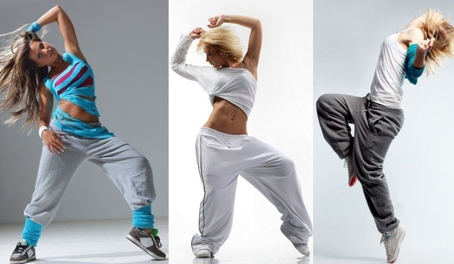Віденський вальс — бальний танець європейської програми. Аналогічний повільному вальсу, відрізняється кількістю тактів в хвилину, тобто темпом виконання.
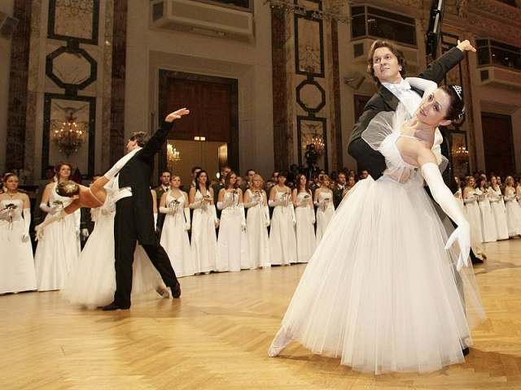Танго — старовинний іспанський народний танець. Парний бальний танець вільної композиції, що відрізняється енергійним і чітким ритмом. Спочатку отримав розвиток і поширення в Аргентині і Уругваї, потім став популярний у всьому світі. Раніше танго було відоме як танго criollo, або просто танго. Сьогодні існує багато танцювальних стилів танго, у тому числі аргентинське танго, уругвайське танго, бальне танго (американського і міжнародного стилю), фінське танго і старовинне танго. Аргентинське танго часто розглядається як «автентичне» танго, оскільки воно наближене до того, що спочатку танцювалося в Аргентині і Уругваї.
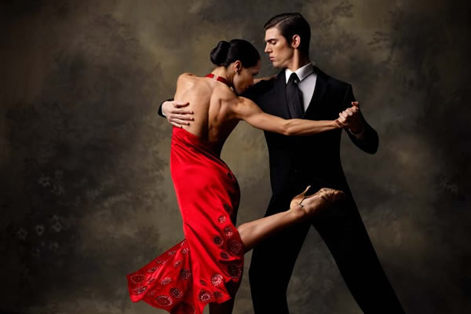Пасодобль — іспанський танець, що імітує кориду. Перша назва танцю — «один іспанський крок» («Spanish One Step»), оскільки кроки робляться на кожен рахунок. Пасодобль був одним з багатьох іспанських народних танців, пов'язаних з різними аспектами іспанського життя. Частково пасодобль заснований на бою биків. Партнер змальовує тореро, а партнерка — його плащ (мулета), іноді — другого тореро, і зовсім рідко — бика, як правило, враженого фінальним ударом. Характер музики відповідає процесії перед коридою.
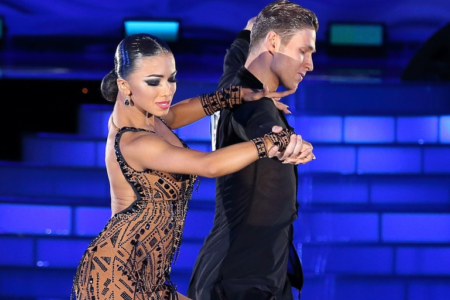Балет — вид сценічного мистецтва, танцювальна театральна вистава, у якій музика поряд з танцем відіграє важливу роль у розвитку сюжету і створенні відповідного настрою; синтетичний вид сценічного мистецтва, в якому зміст вистави розкривається в основному засобами танцю, міміки і музики.
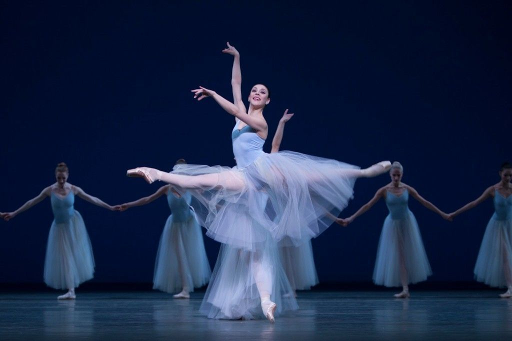Повільний фокстрот — танець Європейської програми, виконується на змаганнях, починаючи із C класу. Фокстрот – новий парний танець, що розвинувся в 1912 р. в США з не настільки темпераментного ванстепа. Існує помилкова думка, що назва танцю походить від англійського слова foxtrot, що перекладається як «хода лисиці». Насправді це не так. Фокстрот був винайдений Гарі Фоксом (Harry Fox) для виступу на шоу в Нью-Йорку в 1913 р. Після Першої світової війни загальне захоплення фокстротом перекинулося на країни Європи. Це надзвичайно гармонійний танець, що поєднує перш за все неповторну «гладеньку» побіжність (невагомість) кроків та легкість.
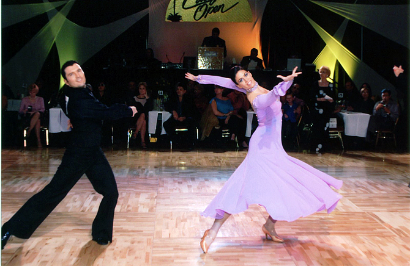Са́мба — бразильський танець, один з п'яти танців латиноамериканської програми бальних танців. Музика самби має характерний ритм, що створюється барабанами і маракамі, зазвичай має 50-52 такти в хвилину .
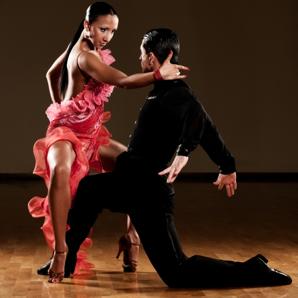Ча-ча-ча (ісп. cha cha cha) — музичний стиль і танець Куби, що набув також широкого поширення в латиноамериканських країнах Карибського басейну, а також в латиноамериканських общинах США, де переважають вихідці з цих країн. Ча-ча-ча виник в процесі еволюції і експериментів кубинського композитора Енріке Хорріна (Enrique Jorrin, 1926-1987) з Дансоном, в 50-х роках 20 століть.
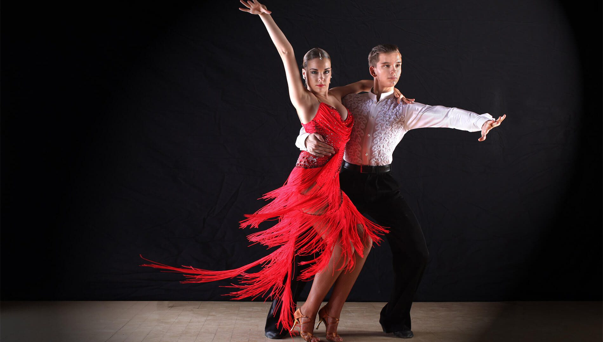Румба — парний кубинський танець африканського походження. Відмітною особливістю румби є еротичні плавні рухи, сполучені з широкими кроками. Найбільш відомою у всьому світі мелодією румби вважають знамениту «Guantanamera», написану Жозеїто Фернандесом, що швидко стала класикою румби. Серед всіх бальних танців румба характеризується найбільш глибоким емоційним вмістом. У ході своєї еволюції румба набула багатьох ознак, характерних для блюзу. Існує несправедлива думка, що «румба — танець кохання».
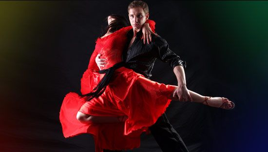